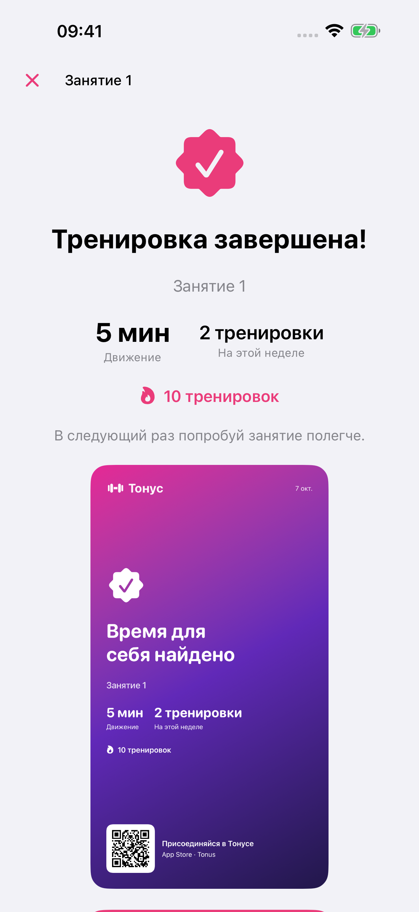
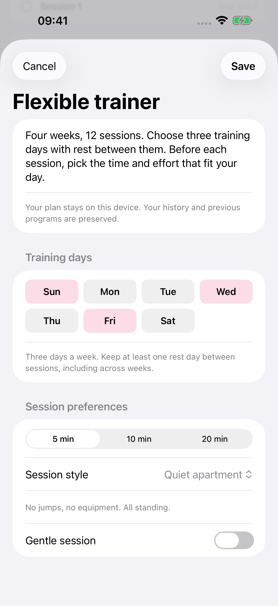

Von Nikita Revin, Entwickler von Tonus · 4. November 2026 · Für die veröffentlichte Version 1.5 geprüft.
Nach der letzten Übung fragt Tonus, wie schwer sich die Einheit angefühlt hat. Ihre Antwort gehört zum gespeicherten Training. Im flexiblen Plan kann sie außerdem einen Vorschlag für die nächsten Einheiten auslösen. Die Änderung bestätigen Sie selbst.
Das Training mit Feedback speichern
Am Ende wählen Sie zwischen „Leicht“, „Genau richtig“ und „Schwer“. Denken Sie dabei an die gerade absolvierte Einheit. Ein kurzer Durchgang kann sich an einem anstrengenden Tag schwer anfühlen; die gewählte Minutenzahl allein beantwortet die Frage nicht.
Bestätigen Sie anschließend mit „Fertig“. Damit speichert Tonus die abgeschlossene Einheit mit Ihrer Einschätzung und zeigt den Ergebnisbildschirm. Diese Auswahl ist Ihr persönliches Feedback innerhalb der App. Sie wird nicht als öffentliche App-Store-Rezension veröffentlicht.
Die Einschätzung kommt von Ihnen. Tonus leitet daraus weder eine medizinische Beurteilung noch eine Messung Ihrer körperlichen Leistungsfähigkeit ab.
Einen Belastungsvorschlag prüfen
Im flexiblen Plan kann nach einer als schwer bewerteten regulären Einheit ein Vorschlag für sanftere nächste Einheiten erscheinen. Wenn sanfte Einheiten wiederholt leicht waren, kann die App umgekehrt reguläre Belastung vorschlagen. Ein solcher Vorschlag ist kein Auftrag, schwieriger zu trainieren.

Lesen Sie den Vorschlag im flexiblen Plan, bevor Sie die nächste Einheit starten. Ein allgemeiner Hinweis auf dem Ergebnisbildschirm und die Entscheidung über die künftige Planeinstellung sind zwei getrennte Schritte.
Annehmen oder die Einstellung behalten
Bei einem angebotenen Wechsel können Sie zustimmen oder den aktuellen Aufwand beibehalten. Erst die Zustimmung übernimmt die vorgeschlagene Belastungsart. Bereits abgeschlossene Einheiten bleiben im Plan erfasst.
Der Vorschlag betrifft die sanfte oder reguläre Variante des flexiblen Heimtrainings. Er berechnet kein neues Hantelgewicht für ein Kraftprogramm. Eine manuell gespeicherte Gewichtsnotiz in Tonus 1.5 hat ihren eigenen Zweck: Sie erinnert an den zuletzt eingetragenen Wert.
Vor dem nächsten Start entscheiden
Prüfen Sie vor dem Start, welche Dauer und Belastungsart ausgewählt sind. Auch ohne eingeblendeten Vorschlag können Sie die angebotenen Einstellungen selbst wählen. Ein Plan mit zwölf Einheiten verpflichtet Sie nicht dazu, eine anstrengende Variante trotz Unwohlsein fortzusetzen.

Bewerten Sie die nächste abgeschlossene Einheit erneut nach Ihrem Eindruck. Eine passende Rückmeldung hilft Ihnen, die gewählte Einstellung beim nächsten Start zu überprüfen.
Tonus 1.5 ist kostenlos für iPhone ab iOS 17, ohne Konto, Abonnement oder In-App-Käufe. Pläne und schriftliche Anleitungen funktionieren offline. Online-Videos benötigen Internet; externe Videodienste können Werbung zeigen. Apple Health ist optional. Bei Schmerzen oder Unwohlsein das Training beenden; gesundheitliche Einschränkungen mit einer qualifizierten Fachperson besprechen.
Tonus im App Store ansehen